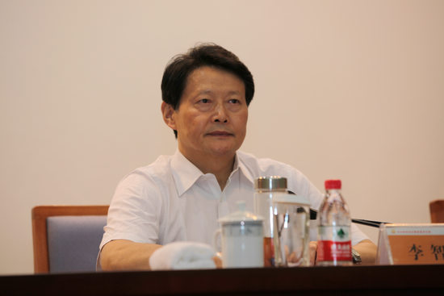

办公室-主任-陈晨
2017-06-025 15:28
此外，他们的责任意识、沟通能力、创新意识、团队精神还有待提高。为此，街道组织开展了红色拓展训练。通过对红色精神的学习和体验，使社区工作者的思想得到一次深刻的历练，从而树立起艰苦创业、永不止步的拼搏精神，增强了组织凝聚力，提高了工作中的执行力。
今年5月5日至8日，积玉桥街分两批组织部分街道干部和全街社区工作者赴天紫湖拓展培训基地开展体验式拓展培训。
培训中，大家迎难而上，大胆挑战自我，组员之间相互加油、相互鼓励，克服心理障碍，不逃避不放弃，所有小组均圆满完成各个拓展项目。
街道党工委书记陶宇告诉记者，组织街道干部和社区工作者培训是加强社区建设的基础性工程，抓好社区队伍建设，有助于增强街道整体的创造力、凝聚力和战斗力。
通过此次拓展培训，大家充分认识到团队协作、创新思维的重要性，四个意识有了显著提高，对全街工作效率起到积极作用。